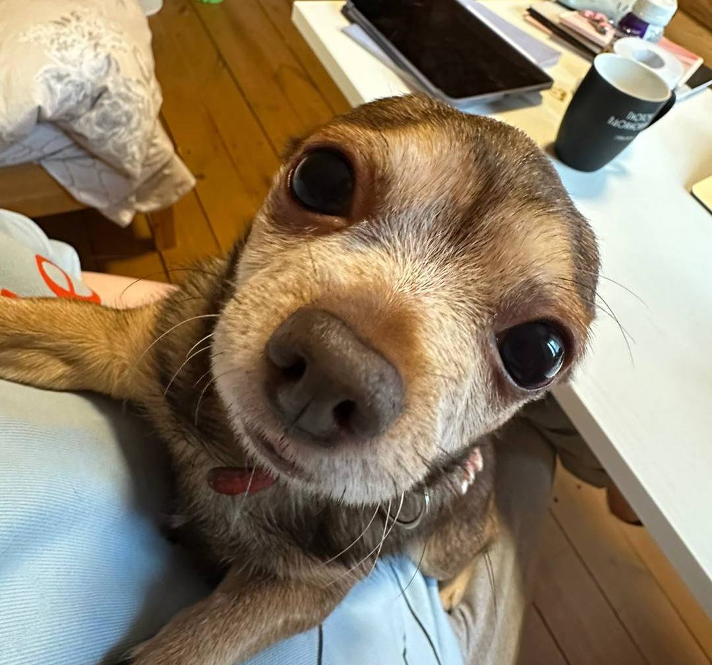

Добывание пропитания в диких условиях
- Выслеживал дичь
- Проявлял смелость и бесстрашие
- Приносил добычу
- Остался жив
Аслану меня лапки |
 |
Опыт работыДобывание пропитания в диких условиях
Дверной звонок
Золотодобытчик
ОбразованиеНовосибирская Академия выклянчивания едыОкончил с отличием |
КонтактыEmail: gav-gav@yandex.ru Телефон: +7(XXX)-XXX-XX-XX Город: Новосибирск GitHub: github.com/aslan-gav Навыки
Дополнительно
|